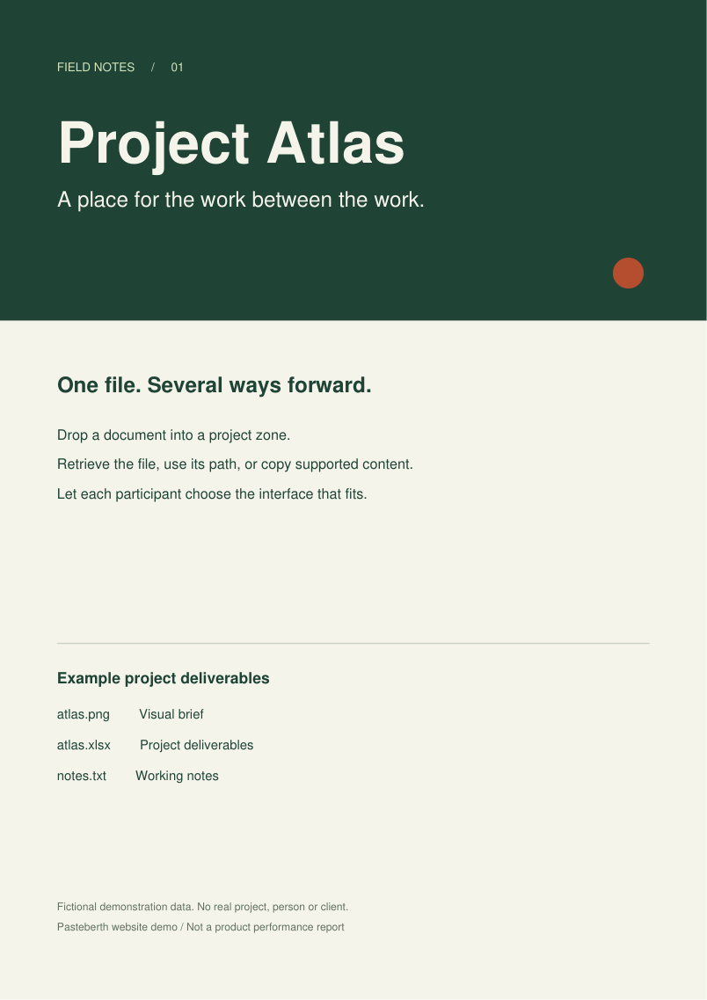

Vos fichiers.
Prêts pour
la suite.
Your files.
Ready for
what’s next.
Une capture à recoller. Un Excel à transmettre. Un rapport à récupérer. Un point de passage entre vos navigateurs, vos répertoires et vos outils. A screenshot to paste again. A spreadsheet to pass on. A report to pick up. One shared place between your browsers, filesystems and tools.
@/repo/atlas/…/atlas.png
Une place pour vos captures.
Et pour tout le reste.
A place for your screenshots.
And everything else.
Les formats ne décident pas
qui peut participer.
File formats don’t decide
who gets to participate.
Pas seulement
à télécharger.
À reprendre.
Not just a file
to download.
Work to carry on.
Copiez le contenu quand son format le permet. Reprenez le chemin exact pour un outil. Ou récupérez simplement le fichier. Copy the content when its format allows. Take the exact path into a tool. Or simply download the file.
Même seul, c’est utile : collez maintenant, retrouvez et recopiez plus tard. Useful even on your own: paste now, find it and copy it again later.

atlas.png
Une image, un fichier et un chemin. An image, a file and a path.
@/repo/atlas/…/atlas.png
La recopie dépend du format et des permissions du navigateur. Les chemins de cette démo sont fictifs. Copying depends on the format and browser permissions. Paths in this demo are fictional.
Pas un workflow de plus.
Une place dans le vôtre.
Not another workflow.
A place in yours.
Seul ou à plusieurs. Entre personnes, agents ou scripts. Chacun choisit son accès ; personne n’est assigné à un côté. On your own or together. Between people, agents or scripts. Everyone chooses their interface. Nobody is assigned a side.
Collez maintenant.
Recopiez plus tard.
Paste now.
Copy again later.
Une capture, une note, un document : gardez-les dans une zone, sans dépendre du dernier élément de votre presse-papiers. A screenshot, a note, a document: keep them in a zone instead of relying on the last item in your clipboard.
Un contenu, plusieurs sorties One item, several ways forward
Vos zones.
À vous de jouer.
Your zones.
Make yourself at home.
Voici la véritable interface de Pasteberth, avec un serveur simulé dans cet onglet. Sélectionnez, recopiez, téléchargez. Sans installation. This is the actual Pasteberth interface, with a server simulated in this tab. Select, copy and download. No installation needed.

Les fichiers déposés dans cette démo restent en mémoire dans cet onglet. Ils disparaissent à la réinitialisation ou au rechargement. Files dropped in this demo stay in this tab’s memory. They disappear when you reset or reload it.
Démo en anglais du frontend de travail (Unreleased ; version déclarée 2.1.21). Affiche initiale : capture historique 2.1.18 du 8 septembre 2026. Copie selon les permissions du navigateur. English working-tree frontend demo (Unreleased; declared version 2.1.21). Initial poster: historical 2.1.18 capture from the 8 September 2026 archive. Clipboard access depends on browser permissions.
Ce que cette démonstration montre exactement What this demo actually shows
Le frontend est copié à l’identique depuis l’arbre de travail de ce dépôt, avec des modifications Unreleased absentes de la version publiée 2.1.21. Le runtime déclare toujours 2.1.21. Le serveur est simulé dans l’onglet : ni authentification, ni verrous, ni transactions ou garanties de stockage. Les transferts font partie du produit depuis 2.1.19. Limites propres à la démo : 8 Mio par fichier et 32 Mio de fichiers au total, pas un plafond strict de mémoire JavaScript. Le serveur a ses propres limites configurables (upload : 20 Mio par défaut). The frontend is copied byte-for-byte from this repository’s working tree, including Unreleased changes absent from published 2.1.21. The runtime still declares 2.1.21. The server is simulated in this tab: no authentication, locks, transactions or storage guarantees. Transfers are part of the product since 2.1.19. Demo-only limits: 8 MiB per file and 32 MiB of files in total, not a strict JavaScript memory cap. The server has separate configurable limits (upload: 20 MiB by default).
Unreleased : les cartes ajoutent la date à l’heure lorsque le created_at enregistré remonte à plus de 24 heures. Cet horodatage est conservé lors des copies et déplacements entre zones ; ce n’est pas l’heure d’arrivée dans la zone actuelle. Ce correctif appartient au frontend du produit, pas à un artifice de prévisualisation.Unreleased: cards add the date to the time when stored created_at is more than 24 hours old. Copies and moves between zones preserve that timestamp; it is not arrival time in the current zone. This fix belongs to the product frontend, not a preview-only workaround.
Unreleased : le frontend vérifie la limite de fichiers par ZIP annoncée par le serveur avant l’envoi. Cette démo annonce et applique 64 fichiers par ZIP ; elle ne simule pas les limites globales de téléchargements simultanés du serveur.Unreleased: the frontend checks the server-advertised ZIP file-count limit before submitting. This demo advertises and enforces 64 files per ZIP; it does not simulate the server’s global concurrent-download limits.
Les trois captures sont historiques : code affichant 2.1.18, conservées de l’archive datée du 8 septembre 2026. Elles ne montrent pas une installation 2.1.21.The three screenshots are historical: code displaying 2.1.18, retained from the archive dated 8 September 2026. They do not show a 2.1.21 installation. Provenance
Déjà sur le disque ?
Laissez-le là.
Already on disk?
Leave it there.
Vos outils savent produire des fichiers. Ils n’ont pas tous besoin de développer leur propre interface pour les remettre. Your tools know how to produce files. They don’t all need to build their own interface to hand them over.
Le fichier reste un fichier. A file stays a file.
Copiez-le dans la zone, puis enregistrez-le. register valide le fichier et crée ou rafraîchit son sidecar, sans réécrire ses données ni contacter le daemon.
Copy it into the zone, then register it. register validates the file and creates or refreshes its sidecar, without rewriting its data or contacting the daemon.
Le service retrouvera la paire lors d’un rafraîchissement. Un fichier simplement copié, sans enregistrement, reste en dehors de l’historique géré. The service will find the pair on a refresh. A file simply copied in, without registration, stays outside the managed history.
ZONE=/repo/atlas/ignoredbygit/exchange
DEST="$ZONE/report-new.pdf"
[ ! -e "$DEST" ] && [ ! -L "$DEST" ] &&
[ ! -e "$DEST.json" ] && [ ! -L "$DEST.json" ] &&
cp -T --update=none-fail -- report.pdf "$DEST" &&
pasteberth register "$DEST"
Choisissez des noms de fichier et de sidecar inutilisés. Requiert GNU cp avec -T et --update=none-fail. Les tests refusent aussi les répertoires et liens, mais ne réservent pas les noms contre un autre producteur. Sans écritures concurrentes ; sinon utilisez drop. register ne remplace pas les données. Pour un remplacement géré, utilisez drop --replace. Choose unused data and sidecar names. Requires GNU cp with -T and --update=none-fail. The checks also reject directories and links, but do not reserve names against another writer. Use without concurrent writers; otherwise use drop. register does not replace data. Use drop --replace for managed replacement.
Une capture, puis une autre. One capture, then another.
Retrouvez les éléments précédents dans l’historique de la zone. Les dépôts anonymes identiques sont dédupliqués par contenu. Find earlier items in the zone’s history. Identical anonymous uploads are deduplicated by content.
latest-report.pdf
Avec un dépôt nommé et --replace, mettez à jour un résultat géré en gardant sa référence. Ce remplacement n’est pas du versionnement.
With a named upload and --replace, update a managed result while keeping its reference. Replacement is not version history.
Un projet naît.
Sa zone aussi.
A project appears.
So does its zone.
Configurez une collection et son groupe une fois. Ensuite, vos templates de projet créent le répertoire d’échange ; Pasteberth le découvre. Configure a collection and its group once. Then your project templates create the exchange directory; Pasteberth discovers it.
Pas de déclaration par projet.
Pas de redémarrage.
Pas de connexion SSH pour retrouver la zone dans le Web.
No per-project declaration.
No restart.
No SSH login to find the new zone in the Web UI.
Simulation accélérée, sans scan réel. Le navigateur visible interroge toujours le service toutes les 10 secondes. Unreleased, et non dans la version publiée 2.1.21 : après la fin d’un rafraîchissement, les requêtes de vue ne peuvent déclencher le prochain scan asynchrone qu’après une pause égale au maximum de 10 secondes et de la durée totale du dernier rafraîchissement. Une réponse ultérieure expose le résultat. Aucun délai maximal strict ne borne les appels filesystem ; ce n’est ni un watcher ni une boucle autonome permanente. Accelerated simulation, without a real scan. The visible browser still polls every 10 seconds. Unreleased, not in published 2.1.21: after a refresh completes, overview requests become eligible to start the next asynchronous scan only after a cooldown of max(10 seconds, last full refresh duration). A later response exposes the result. There is no hard filesystem-call timeout, filesystem watcher or standalone perpetual scanning loop.
Votre arborescence. Le bon TOML. Your directory layout. The right TOML.
Les conditions à respecter Requirements to keep in mind
La collection découvre des répertoires existants, sans sous-répertoire, accessibles en lecture, écriture et traversée par le service. L’ID dérivé doit respecter [a-z0-9][a-z0-9_-]{0,63}, sans collision. first-directory utilise le premier répertoire, donc le nom du projet, comme libellé, sans exiger Git. Les groupes sont des vues, pas des permissions.
The collection discovers existing directories with no subdirectories, readable, writable and traversable by the service. The derived ID must match [a-z0-9][a-z0-9_-]{0,63}, with no collisions. first-directory uses the first directory, the project name, as its label without requiring Git. Groups are views, not access permissions.
Ce générateur est un outil de documentation dans cette page, pas une fonction du serveur. Il vérifie une convention simple, pas les permissions réelles. L’extrait ne configure ni le listener ni l’authentification. Ajoutez-le une seule fois avec un ID de collection inutilisé, puis lancez pasteberth audit. retain = 100 est un choix d’exemple, pas la valeur par défaut de 10 ; la rétention peut supprimer d’anciens éléments.
This generator is a documentation tool in this page, not a server feature. It checks a simple convention, not actual permissions. The snippet configures neither the listener nor authentication. Append it once with an unused collection ID, then run pasteberth audit. retain = 100 is an example choice, not the default of 10; retention can delete older items.
Un petit service.
Une place durable.
A small service.
A lasting place.
Le serveur travaille là où vivent vos répertoires. Le navigateur n’a pas besoin d’un accès shell pour déposer ou récupérer les fichiers gérés. The server runs where your directories live. The browser needs no shell access to deposit or retrieve managed files.
Référence : arbre de travail de ce dépôt, avec des modifications Unreleased ; version déclarée et dernière publication : 2.1.21. La présence de code Windows ou macOS ne vaut pas validation native. Ce site ne certifie pas le backend. Reference: this repository’s working tree, including Unreleased changes; declared and latest published version: 2.1.21. Windows or macOS code does not imply native validation. This site does not certify the backend.
Lire le guide de déploiement Read the deployment guide
git clone https://github.com/Fade78/pasteberth.git
cd pasteberth
./PasteBerth/pasteberth
http://127.0.0.1:8765. Le mode minimal est local et sans authentification : ne l’exposez pas à un réseau ou à un proxy.
With no existing configuration, open http://127.0.0.1:8765. The minimal mode is local and unauthenticated: do not expose it to a network or proxy.
Avant de
l’adopter.
Before you
make it yours.
Un petit parcours libre de relecture ?A small, optional review workflow?
Par exemple : déposez un rapport dans une zone de préparation, ajoutez un commentaire « vérifier les totaux », puis copiez ou déplacez les fichiers vers une zone de relecture. Les participants choisissent librement leurs étapes et leurs conventions.For example: put a report in a staging zone, add a “check the totals” comment, then copy or move the files into a review zone. Participants choose their own steps and conventions.
Ce n’est qu’un usage des zones, commentaires et transferts existants : aucun processus imposé, statut d’approbation, rôle, ACL, messagerie ou notification. Un commentaire est une note modifiable sur un fichier, pas une conversation.This only combines existing zones, comments and transfers: no enforced process, approval status, roles, ACLs, messaging or notifications. A comment is an editable note on a file, not a conversation.
Faut-il travailler avec un agent ? Do I need to work with an agent?
Non. Vous pouvez l’utiliser seul, entre personnes, entre agents ou avec des scripts. Le produit organise des zones et des fichiers, pas des rôles humains ou logiciels. No. Use it on your own, between people, between agents or with scripts. The product organizes zones and files, not human or software roles.
Puis-je y déposer un PDF ou un Excel ? Can I drop a PDF or Excel file?
Oui, si les types de contenu et les limites configurés l’autorisent. Ils restent des fichiers à récupérer : Pasteberth n’est ni un éditeur Excel ni une visionneuse PDF. Les actions de recopie et de prévisualisation dépendent du type de contenu. Yes, when the configured content types and size limits allow it. They remain files to retrieve: Pasteberth is neither an Excel editor nor a PDF viewer. Clipboard and preview actions depend on the content type.
« Copy link » crée-t-il un lien public ? Does “Copy link” create a public URL?
Non. Il copie la référence filesystem renvoyée par le service, avec le préfixe et le format configurés. Le navigateur n’a pas besoin de pouvoir ouvrir ce chemin. Ce n’est pas un lien public de partage. No. It copies the filesystem reference returned by the service, with the configured prefix and format. The browser does not need to open that path. It is not a public sharing URL.
Les groupes isolent-ils les utilisateurs ? Do groups isolate users?
Non. Ce sont des sélections et des présentations de zones. Le service utilise une authentification partagée, pas des comptes avec des droits par personne. No. They select and present zones. The service uses shared authentication, not individual accounts with per-person permissions.
Est-ce une synchronisation ou une sauvegarde ? Is this synchronization or backup?
Non. Les zones sont de vrais répertoires du serveur, avec des fichiers et leurs sidecars JSON. Pasteberth ne synchronise pas des serveurs indépendants. La rétention peut supprimer d’anciens éléments gérés ; elle ne remplace pas une sauvegarde et n’est pas un quota appliqué en continu aux enregistrements locaux. No. Zones are real server directories containing files and their JSON sidecars. Pasteberth does not synchronize independent servers. Retention can remove older managed items; it is not a backup, nor a continuously enforced quota on local registrations.
Cette page installe-t-elle Pasteberth ? Does this page install Pasteberth?
Non. Le mini-site est statique et la démo s’exécute en mémoire dans votre navigateur. Pour conserver des fichiers et partager de vraies zones, déployez le service Pasteberth sur votre infrastructure. No. This is a static website and the demo runs in your browser’s memory. To persist files and share real zones, deploy the Pasteberth service on your infrastructure.
Du premier essai
à votre installation.From the first try
to your installation.
Liens directs vers les fichiers Markdown du dépôt, pas vers un portail HTML. GitHub les affiche ; un serveur statique peut afficher ou télécharger leur source. La documentation technique est en anglais.Direct links to repository Markdown files, not an HTML portal. GitHub renders them; a static server may show or download their source. Technical documentation is in English.
Moins de manipulations.
Plus de continuité.
Less moving things around.
More moving forward.
Donnez à vos fichiers un endroit où passer. Le reste vous appartient. Give your files a place to pass through. What happens next is up to you.